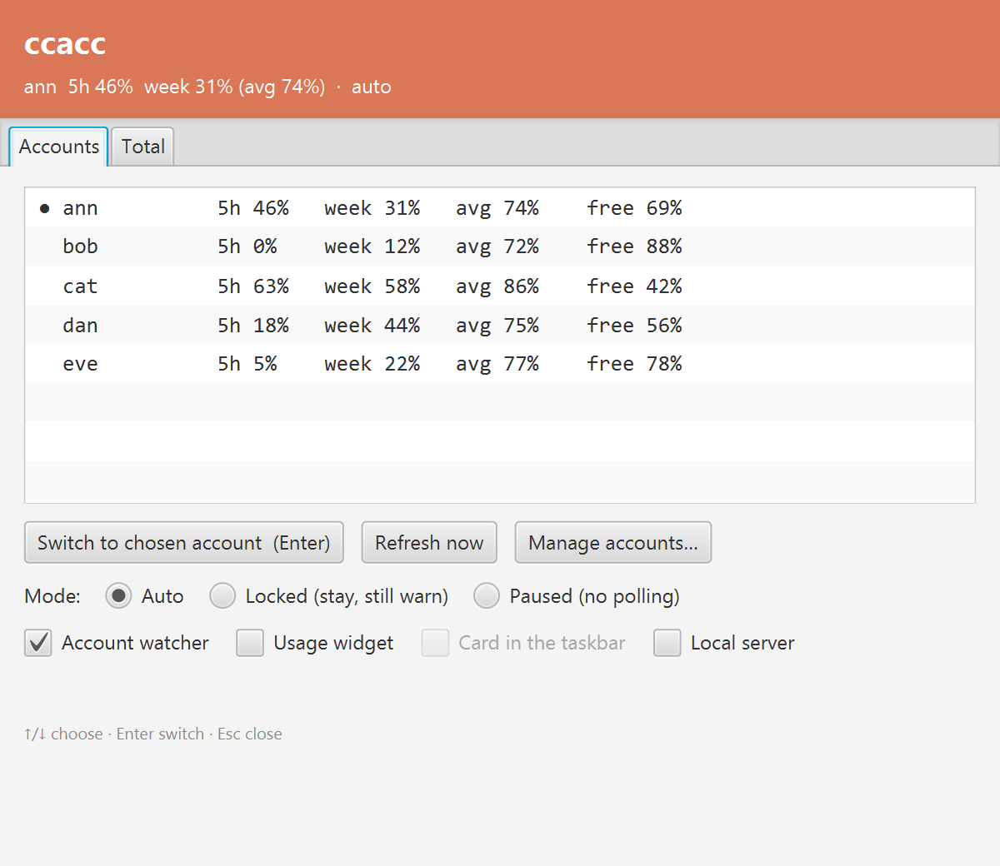
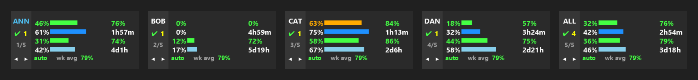
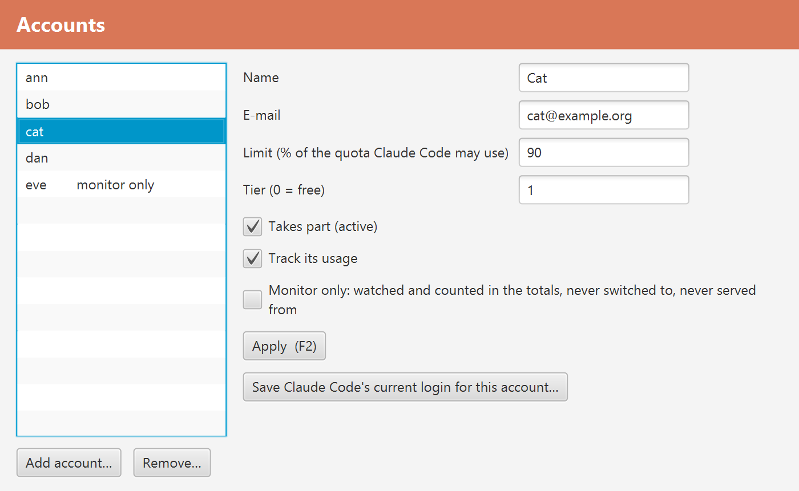

If you use Claude Code with more than one Claude subscription, ccacc shows how much of each is used and moves Claude Code to the one with the most room.


Windows, in cmd or PowerShell:
curl.exe -fLo ccacc.exe https://github.com/ccsuite/ccsuite/releases/download/v0.1.0-beta.2/ccacc.exe
.\ccacc.exe install --start-at-loginmacOS, in Terminal:
curl -fLo /tmp/ccacc https://github.com/ccsuite/ccsuite/releases/download/v0.1.0-beta.2/ccacc-macos-$(uname -m) && chmod +x /tmp/ccacc && /tmp/ccacc install --start-at-loginThis is a beta. Windows is in daily use. On the Mac the tray icon, the windows and the Keychain access have not yet been tried by a person; reports are welcome. The Mac binary is signed ad hoc, not by an Apple developer; downloaded with curl it opens as it is.

Source, the full README and the releases: github.com/ccsuite/ccsuite. Licence: Apache 2.0.